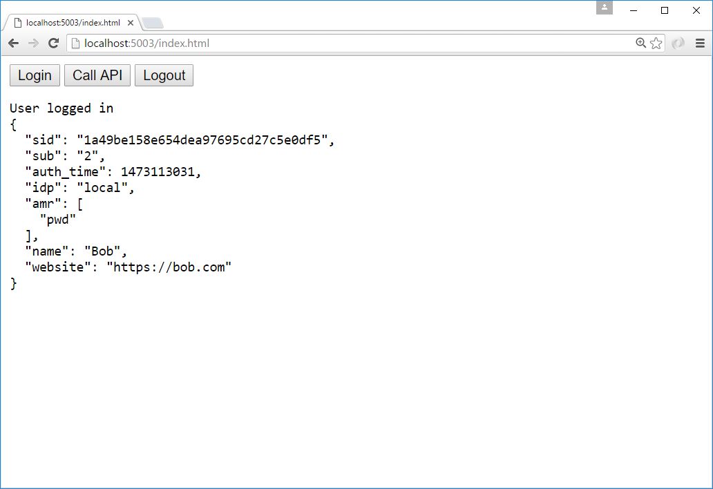
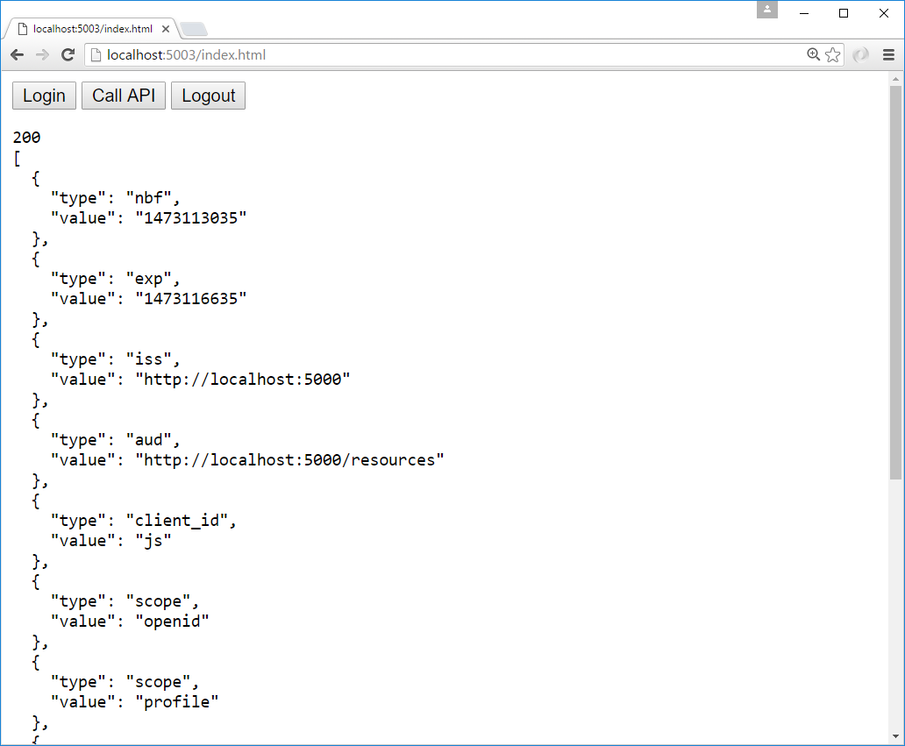

添加 JavaScript 客户端¶
注解
对于任何先决条件（例如模板），请先查看 概述。
本快速入门将展示如何构建基于浏览器的 JavaScript 客户端应用程序（有时称为“单页应用程序”或"SPA"）。
用户将登录到 IdentityServer，使用 IdentityServer 颁发的访问令牌调用 Web API，然后注销 IdentityServer。 所有这一切都将由在浏览器中运行的 JavaScript 驱动。
新的 JavaScript 客户端项目¶
为 JavaScript 应用程序创建一个新项目。 它可以只是一个空的 Web 项目、一个空的 ASP.NET Core 应用程序或其他类似 Node.js 的应用程序。 本快速入门将使用 ASP.NET Core 应用程序。
在 ~/src 目录中创建一个新的 "Empty" ASP.NET Core Web 应用程序。 您可以使用 Visual Studio 或从命令行执行此操作:
md JavaScriptClient
cd JavaScriptClient
dotnet new web
正如我们之前所做的那样，对于其他客户端项目，也将此项目添加到您的解决方案中。 从包含 sln 文件的根文件夹运行它:
dotnet sln add .\src\JavaScriptClient\JavaScriptClient.csproj
修改托管¶
修改 JavaScriptClient 项目以在 https://localhost:5003 上运行。
添加静态文件中间件¶
鉴于此项目旨在运行客户端，我们需要 ASP.NET Core 做的就是提供构成我们应用程序的静态 HTML 和 JavaScript 文件。 静态文件中间件就是为此而设计的。
在 Startup.cs 中的 Configure 方法中注册静态文件中间件（同时删除其他所有内容）:
public void Configure(IApplicationBuilder app)
{
app.UseDefaultFiles();
app.UseStaticFiles();
}
这个中间件现在将从应用程序的 ~/wwwroot 文件夹中提供静态文件。 这是我们将放置 HTML 和 JavaScript 文件的地方。 如果您的项目中不存在该文件夹，请立即创建它。
引用 oidc-client¶
在之前基于 ASP.NET Core MVC 的客户端项目的快速入门之一中，我们使用了一个库来处理 OpenID Connect 协议。 在 JavaScriptClient 项目的这个快速入门中，我们需要一个类似的库，一个只在 JavaScript 中工作并设计为在浏览器中运行的库。 oidc-client 库 就是这样的一个库。 它可以通过 NPM， Bower，以及从 github 的 直接下载 获得。
NPM
如果你想使用 NPM 下载 oidc-client，那么从你的 JavaScriptClient 项目目录运行这些命令:
npm i oidc-client
copy node_modules\oidc-client\dist\* wwwroot
这会在本地下载最新的 oidc-client 包，然后将相关的 JavaScript 文件复制到 ~/wwwroot 中，以便您的应用程序提供它们。
手动下载
如果您只想手动下载 oidc-client JavaScript 文件，请浏览到 GitHub 存储库 并下载 JavaScript 文件。 下载后，将它们复制到 ~/wwwroot 中，以便您的应用程序提供它们。
添加您的 HTML 和 JavaScript 文件¶
接下来是将您的 HTML 和 JavaScript 文件添加到 ~/wwwroot。 我们将有两个 HTML 文件和一个特定于应用程序的 JavaScript 文件（除了 oidc-client.js 库）。 在 ~/wwwroot 中，添加名为 index.html 和 callback.html 的 HTML 文件，并添加名为 app.js 的 JavaScript 文件。
index.html
这将是您的应用程序的主页。
它将只包含用于用户登录、注销和调用 Web API 的按钮的 HTML。
它还将包含 <script> 标签以包含我们的两个 JavaScript 文件。
它还将包含一个 <pre> 用于向用户显示消息。
它应该是这样的:
<!DOCTYPE html>
<html>
<head>
<meta charset="utf-8" />
<title></title>
</head>
<body>
<button id="login">Login</button>
<button id="api">Call API</button>
<button id="logout">Logout</button>
<pre id="results"></pre>
<script src="oidc-client.js"></script>
<script src="app.js"></script>
</body>
</html>
app.js
这将包含我们应用程序的主要代码。
首先是添加一个辅助函数来将消息记录到 <pre>:
function log() {
document.getElementById('results').innerText = '';
Array.prototype.forEach.call(arguments, function (msg) {
if (msg instanceof Error) {
msg = "Error: " + msg.message;
}
else if (typeof msg !== 'string') {
msg = JSON.stringify(msg, null, 2);
}
document.getElementById('results').innerHTML += msg + '\r\n';
});
}
接下来，添加代码以将 click 事件处理程序注册到三个按钮:
document.getElementById("login").addEventListener("click", login, false);
document.getElementById("api").addEventListener("click", api, false);
document.getElementById("logout").addEventListener("click", logout, false);
接下来，我们可以使用 oidc-client 库中的 UserManager 类来管理 OpenID Connect 协议。
它需要MVC客户端中所必需的类似配置（尽管具有不同的值）。
添加此代码以配置和实例化 UserManager:
var config = {
authority: "https://localhost:5001",
client_id: "js",
redirect_uri: "https://localhost:5003/callback.html",
response_type: "code",
scope:"openid profile api1",
post_logout_redirect_uri : "https://localhost:5003/index.html",
};
var mgr = new Oidc.UserManager(config);
接下来，UserManager 提供了一个 getUser API 来了解用户是否已登录到 JavaScript 应用程序。
它使用 JavaScript Promise 异步返回结果。
返回的 User 对象有一个 profile 属性，其中包含用户的声明。
添加此代码以检测用户是否登录到 JavaScript 应用程序:
mgr.getUser().then(function (user) {
if (user) {
log("User logged in", user.profile);
}
else {
log("User not logged in");
}
});
接下来，我们要实现 login、api 和 logout 函数。
UserManager 提供了一个 signinRedirect 来登录用户，和一个 signoutRedirect 来注销用户。
我们在上面的代码中获得的 User 对象也有一个 access_token 属性，可用于对 Web API 进行身份验证。
access_token 将通过带有 Bearer 方案的 Authorization 标头传递给 Web API。
添加此代码以在我们的应用程序中实现这三个函数:
function login() {
mgr.signinRedirect();
}
function api() {
mgr.getUser().then(function (user) {
var url = "https://localhost:6001/identity";
var xhr = new XMLHttpRequest();
xhr.open("GET", url);
xhr.onload = function () {
log(xhr.status, JSON.parse(xhr.responseText));
}
xhr.setRequestHeader("Authorization", "Bearer " + user.access_token);
xhr.send();
});
}
function logout() {
mgr.signoutRedirect();
}
注解
请参阅 客户端凭据快速入门 以获取有关如何创建上述代码中使用的 api 的信息。
callback.html
一旦用户登录到 IdentityServer，这个 HTML 文件就是指定的 redirect_uri 页面。
它将完成与 IdentityServer 的 OpenID Connect 协议登录握手。
这一切的代码都是由我们之前使用的 UserManager 类提供的。
登录完成后，我们可以将用户重定向回主要的 index.html 页面。
添加此代码以完成登录过程:
<!DOCTYPE html>
<html>
<head>
<meta charset="utf-8" />
<title></title>
</head>
<body>
<script src="oidc-client.js"></script>
<script>
new Oidc.UserManager({response_mode:"query"}).signinRedirectCallback().then(function() {
window.location = "index.html";
}).catch(function(e) {
console.error(e);
});
</script>
</body>
</html>
为 JavaScript 客户端向 IdentityServer 添加客户端注册¶
现在客户端应用程序已准备就绪，我们需要在 IdentityServer 中为这个新的 JavaScript 客户端定义一个配置条目。 在 IdentityServer 项目中找到客户端配置（在 Config.cs 中）。 为我们的新 JavaScript 应用程序，向列表中添加一个新的 Client。 它应该具有下面列出的配置:
// JavaScript 客户端
new Client
{
ClientId = "js",
ClientName = "JavaScript Client",
AllowedGrantTypes = GrantTypes.Code,
RequireClientSecret = false,
RedirectUris = { "https://localhost:5003/callback.html" },
PostLogoutRedirectUris = { "https://localhost:5003/index.html" },
AllowedCorsOrigins = { "https://localhost:5003" },
AllowedScopes =
{
IdentityServerConstants.StandardScopes.OpenId,
IdentityServerConstants.StandardScopes.Profile,
"api1"
}
}
使用 CORS 允许 Ajax 调用 Web API¶
必需的最后一点配置是在 Web API 项目中配置 CORS。 这将允许从 https://localhost:5003 到 https://localhost:6001 的 Ajax 调用。
配置 CORS
在 Startup.cs 的 ConfigureServices 中将 CORS 服务添加到依赖注入系统中:
public void ConfigureServices(IServiceCollection services)
{
// ...
services.AddCors(options =>
{
// 这定义了一个名为 ``default`` 的 CORS 策略
options.AddPolicy("default", policy =>
{
policy.WithOrigins("https://localhost:5003")
.AllowAnyHeader()
.AllowAnyMethod();
});
});
}
在 Configure 中将 CORS 中间件添加到管道中（在路由之后）:
public void Configure(IApplicationBuilder app)
{
app.UseRouting();
app.UseCors("default");
// ...
}
运行 JavaScript 应用程序¶
现在您应该能够运行 JavaScript 客户端应用程序:

单击 "Login" 按钮以登录用户。 一旦用户返回到 JavaScript 应用程序，您应该会看到他们的个人资料信息：
然后单击 "API" 按钮调用 Web API：
最后单击 "Logout" 将用户注销。

您现在已经启动了一个 JavaScript 客户端应用程序，该应用程序使用 IdentityServer 进行登录、注销和验证对 Web API 的调用。